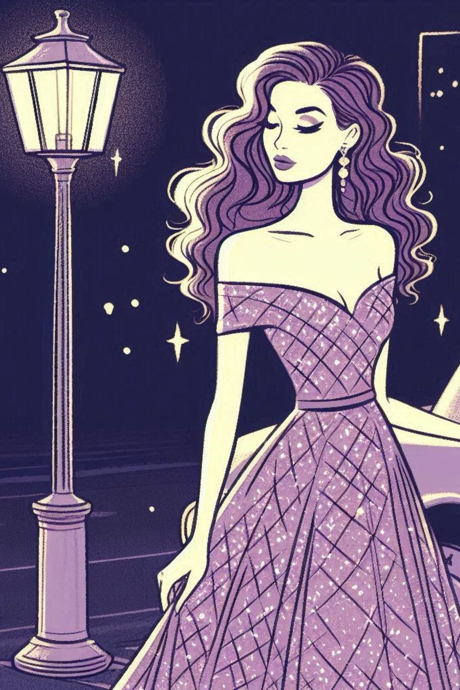

Lady Luna
In a small town filled with secrets, Quinn uncovers her mother’s hidden identity and learns the true meaning of escape.
Two days before
“Knock, knock!” my mother yelled from the hall.
I pulled the pillow over my ears. Why do people say the word knock instead of just knocking? Or worse, why do both? Does one negate the other? Is knocking so difficult that it has to be done using two methods? I turned towards the clock. Eight thirty A.M. As if on cue--
“Knock knock, Quinn!” she said again, this time also pounding the door.
I let out a groan that started at my temples and landed at the foot of my bed.
“Quinn. We are headed to the Astor’s. Are you dressed?” she asked.
I looked down at my t-shirt and shorts I had forgotten to change out of yesterday.
“Technically!” I said.
“Quinn, if we’re late—” She swung open the door. “You’re still in bed!” she said, surprised for some reason.
“I will drive separate,” I said.
“We dine in a half hour. Don’t wear a t-shirt,” she said as she turned and closed my door.
We dine in a half hour. Such a suburban sentence: even for Buford, Georgia. I waited under the sheets until I heard the low hum of the Prius backing out of the driveway. Yes. I leapt out of bed and threw on a pair of pants and a ring for each of my fingers. I debated my most grungy-looking band t-shirt. It felt like one of those 80’s movies where the main character does the rebellious thing and then ends up getting everything they ever wanted. They didn’t have parents like mine though, so I swapped the tee for a blue, buttoned blouse. Mom would love it and I was feeling nice.
I stood on the steps of the Astor’s house. I could almost smell Patsy Astor’s hairspray from where I was standing. I had almost had time to ring the doorbell when--
“Quinn! Well, don’t just stand there; come on in!” Patsy hugged me so hard I almost dropped my phone. That hairspray smell tickled a bit in my nose.
Their house, admittedly, was amazing. High ceilings, huge windows, a rug in every room, and somehow, it always smelled like someone was baking cookies. Patsy led me to the dining room, where I found a seat at the end of the table. When I sat, I fell into the sightline of my father, who sat at the other end.
“Quinn,” he said.
“George,” I said.
My mother sent darts to me with her eyes. Patsy and company did not seem to notice. With that, the conversing began. My mother struck up a conversation with Dave Astor, high school principal and self-proclaimed sailing extraordinaire, something about how she couldn’t wait for the last semester of school for “our girls.” My father joked with Patsy about the weather.
Amelia Astor, who I hadn’t noticed I had sat by, turned to me.
“Can you believe we’re almost starting our last semester?” she said.
“I can’t, so soon!” I said.
I could believe it, actually. High school seemed very long to me. Not for the typical reasons; I didn’t hate school or anything. I liked most of it. The time in-between semesters had felt like ages, though.
“Where are you thinking about going to college?” she asked.
Looking at Amelia was sort of like looking in a mirror. Same age, similar-looking family.
“I haven’t really thought about it yet. I’m thinking about going to a film school, not sure how that will go over yet though.” I tilted my chin to my parents.
“I totally get that feeling. You’d thrive in something like that,” she said.
I remembered why I liked Amelia.
“Where are you going?” I tried to keep the conversation surface level.
“I wanted to go to this art college up in Washington. I think I may end up going to Samford though,” she said.
“How come?” I asked.
“It’s lot closer to home. I have a feeling I would be missed too much.”
“That is more relatable than you know,” I said. We both forced a laugh. Mourning our futures, perhaps.
George had really begun to make Patsy laugh. Her forehead vein was popping out; I distracted myself by mushing scrambled egg through my fork. My father noticed.
“Quinn,” he began, bringing his fingertips to his eyebrows, “at what age will you stop playing with your food.”
Silence. I was now a spectacle.
“Nice to see you too, Dad,” I said.
“George, really,” my mother said, swatting at him with her red fingernails.
He looked down at his plate before inching his eyes to my mother. His mouth softened before he spoke again, “Nancy. Our daughter should be polite.”
My mother shrunk into her seat.
“I can be polite,” I said, gathering my things. “May I be excused? Thank you, Patsy, the breakfast was wonderful.”
“Dear, I am so happy you found the time to come,” Patsy said, the sweet soul.
“Thank you; I really enjoyed it.” I stood to leave.
“You may absolutely not be excused,” said George. He folded an ironed-shirted arm onto the tablecloth. He stretched out an ankle past the edge of the table, making himself large. “Until you apologize,” he said.
A power trip. I knew what do in these situations. I looked at Amelia, who was avoiding my eyes at all costs. Patsy looked at me with her doe eyes; Dave just stared. My mother was surveying her plate.
“I’m sorry,” I said.
“That’s better,” he said. With that, the conversations struck up again. Just in time for a clean exit.
One day before
My mother knocked on my bedroom door that evening.
“Come in,” I said, as she was already turning the knob.
She sat on the corner of my bed. “Hey,” she said. Great. A deep conversation was coming; I could feel it. “I’ve been wanting to talk to you about yesterday morning.”
I sat beside her. “What about it?”
“I just feel like… You and your father… aren’t connecting the way you used to.”
“Mom,” I said, “please hear me when I ask this question. Did we ever connect?”
She took my hand and put it in hers. “I’m sorry,” she said, turning to me.
My mother was a lot of things, but apologetic was not usually one of them. “Why?” I asked.
“I’m sorry it isn’t easier for you,” she said, “I forget sometimes. The Astor’s have it made, huh?” She nudged my arm.
“I don’t think so; I bet they have their issues too,” I said, “though I never see Dave making a show of Amelia.”
“If he could bring his attention away from the television for more than fifteen minutes, he might,” she said.
She got up and draped an arm over my dresser, looking down at me now. Probably preparing to give the big speech she presumably prepared in the car ride after breakfast that morning. I shielded myself by pulling a pillow over my stomach. I raised my chin, ready for anything.
“You leave home in just a few months. Your father may not be the perfect dad, but he is going to be around. You don’t have to like him, but you have to be nice.”
“Mom, I am nice. He isn’t. I can’t be like Dave and just glaze over every time someone does something I don’t like.”
“We all have our escapes, dear. Maybe you need to find yours.” She drummed her nails on my dresser.
E s c a p e. It was like music when she said it. I always heard about those moments: where someone has a breakthrough and inexplicably yells the word, “eureka.” I remember learning about that guy in the bathtub who shouted it after figuring out how water works: or something like that. This moment felt similar, except I was not the ancient Greek scholar Archimedes, and I was fully clothed in my bedroom with my mother. I fiddled with the edge of my comforter before looking back at her: her eyes were already on me.
“What is your escape?” I asked.
Her mouth filled with air, and she puffed it through her teeth. She squeezed my hand again before standing back up. “Dinner is at seven, okay?”
“Okay,” I said. She closed the door behind her.
— end of excerpt —